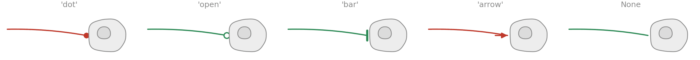
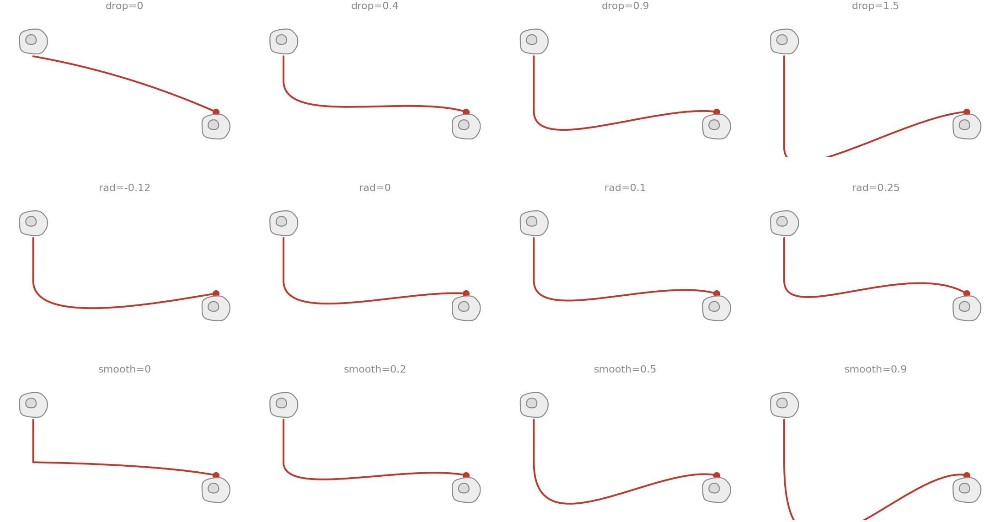
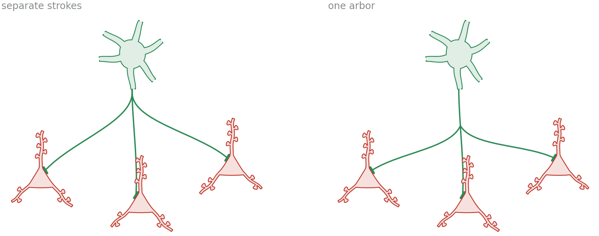
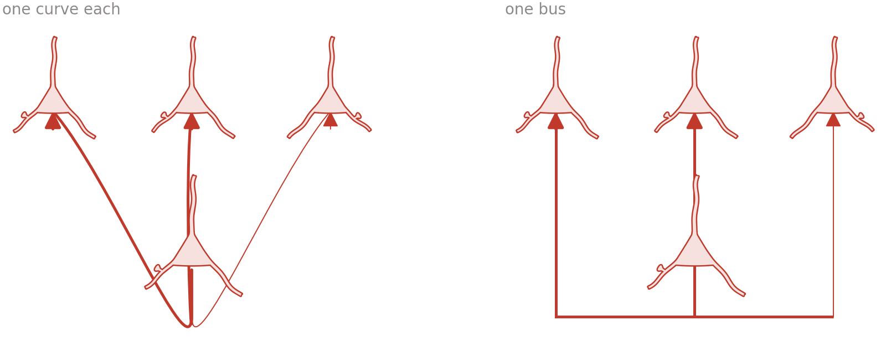

All examples Neuroscience
Circuits & wiring
Cells wired to each other: the connectors, the endcaps that say what a connection is, and the motifs they build.
connectconnect_treeconnectors.endcapneuro.Pyramidalneuro.Basket

The mark at the far end is a claim, not decoration. Use one meaning per figure and say which in the key.
Six motifs

| claim | |
|---|---|
| red, arrowhead | excitation |
| green, bar | inhibition |
'open' | the same contact, not asserted |
The same pair, four claims

Drawing one
import biodraw as bd
pyr = bd.neuro.Pyramidal(spines=6, basal=2, at=(-1.9, 0.0), scale=0.55)
bas = bd.neuro.Basket(dendrites=6, forks=None, at=(0.0, -0.3), scale=0.85)
for cell in (pyr, bas):
cell.draw(ax=ax, wall_lw=0.9)
bd.connect(
ax=ax,
source=pyr.anchor("soma", nearest=bas.at), # the flank facing the target
target=bas.anchor("soma", nearest=pyr.at), # ...and the one facing back
gap=0.05, # clearance at the wall, in local units
drop=0.15, # drop clear of the cell before running
rad=0.07, # bow; positive always bows up
endcap="arrow", # the claim: excitation
)
# One process that leaves and *branches*, rather than several strokes.
bd.connect_tree(
ax=ax,
source=bas.anchor("soma", deg=270.0),
targets=[cell.anchor("soma", nearest=bas.at) for cell in row],
fork=0.45, # how far along the shared stem it splits
spread=0.4, # how far each branch turns at the fork
endcap="bar", # the claim: inhibition
)
# Which compartment a contact lands on is your claim, not the library's.
targets = [pyr.anchor("soma", side=1, t=t) for t in (0.24, 0.42, 0.60)]Endcaps

| endcap | what it says |
|---|---|
'dot' | a synapse, a contact, a junction |
'open' | the same kind of contact, not asserted |
'bar' | inhibition, a block |
'arrow' | flow, direction, causation |
None | the line simply reaches the wall |
Connector shape

One source, several targets

A bus, when several targets share a source

Three palettes

| palette | for |
|---|---|
default | red excitatory, green inhibitory |
colorblind | Okabe-Ito. Use this for print |
mono | greyscale journals, and as the check above |
Every figure above is output, not a stored asset —
drawn by circuit_motifs/build.py, wiring/build.py, in Python, on a matplotlib axes.